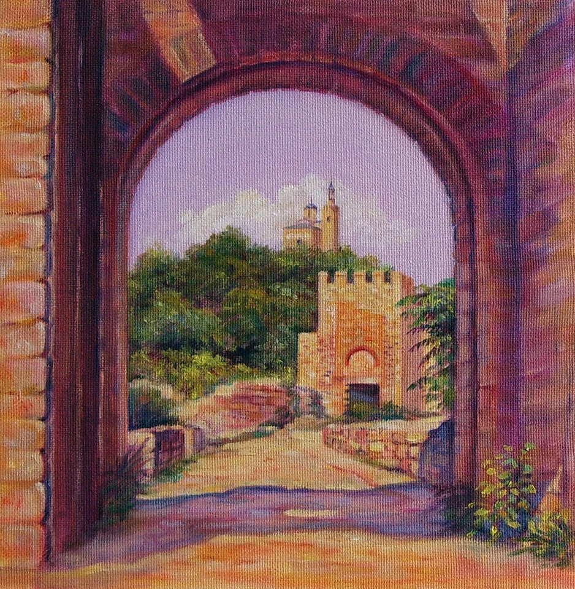

Skip to content
Vasilka Sotirova - Artist
Home
Gallery
Bio
Contact
EN
English
BG
Български
Back to Architectural Landscapes

Oil painting looking through a fortress gateway towards a hilltop church
Copy link
← Previous work
Next work →